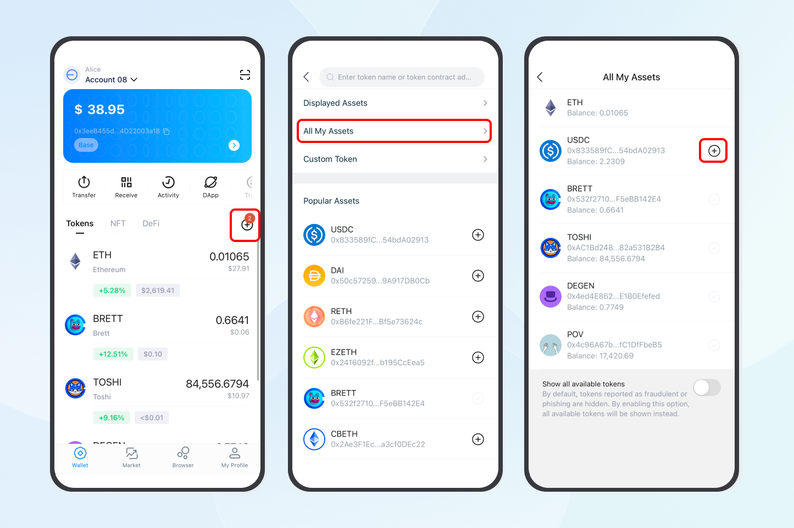
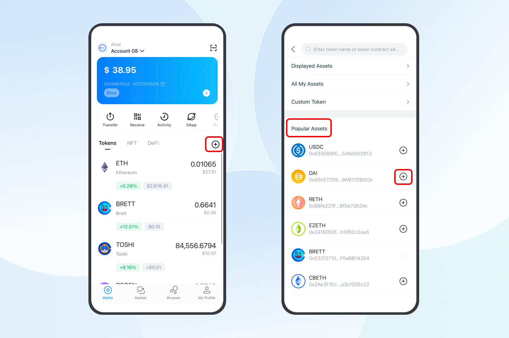
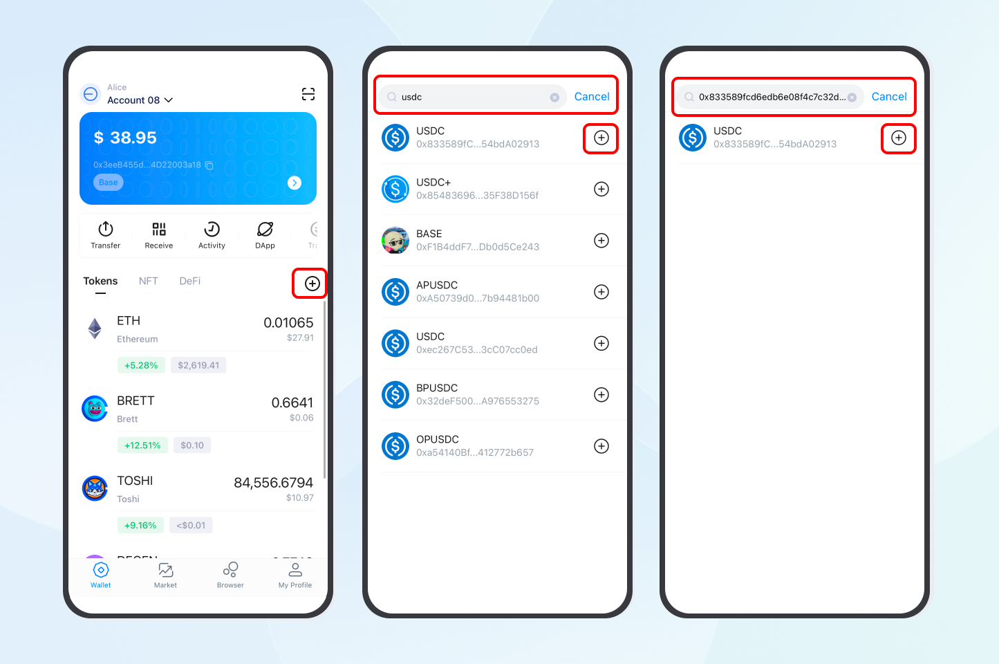
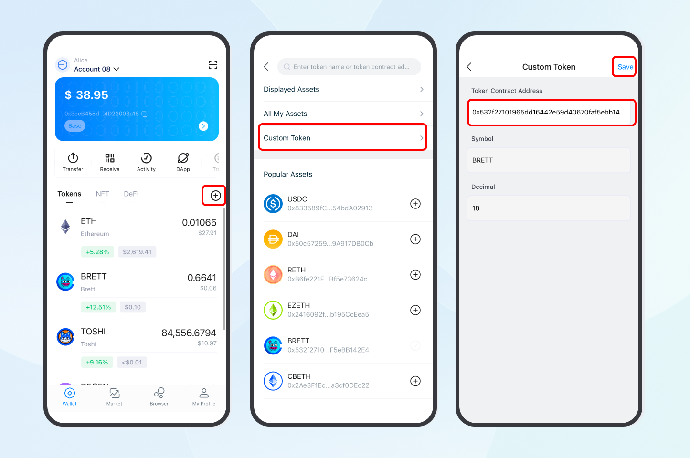
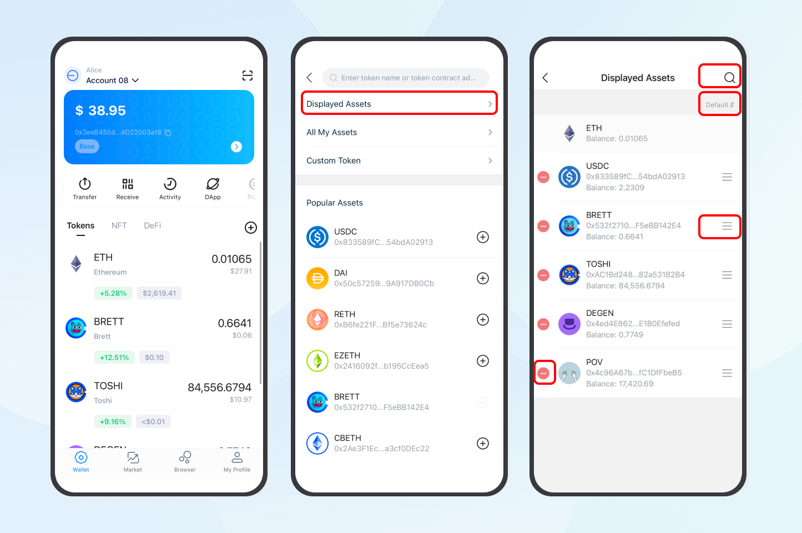
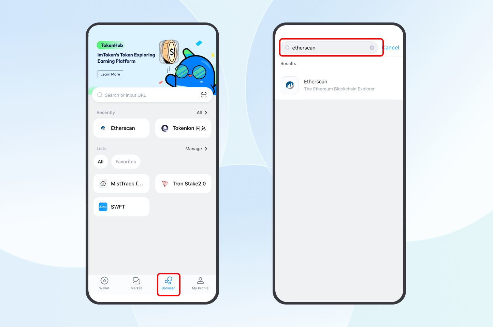
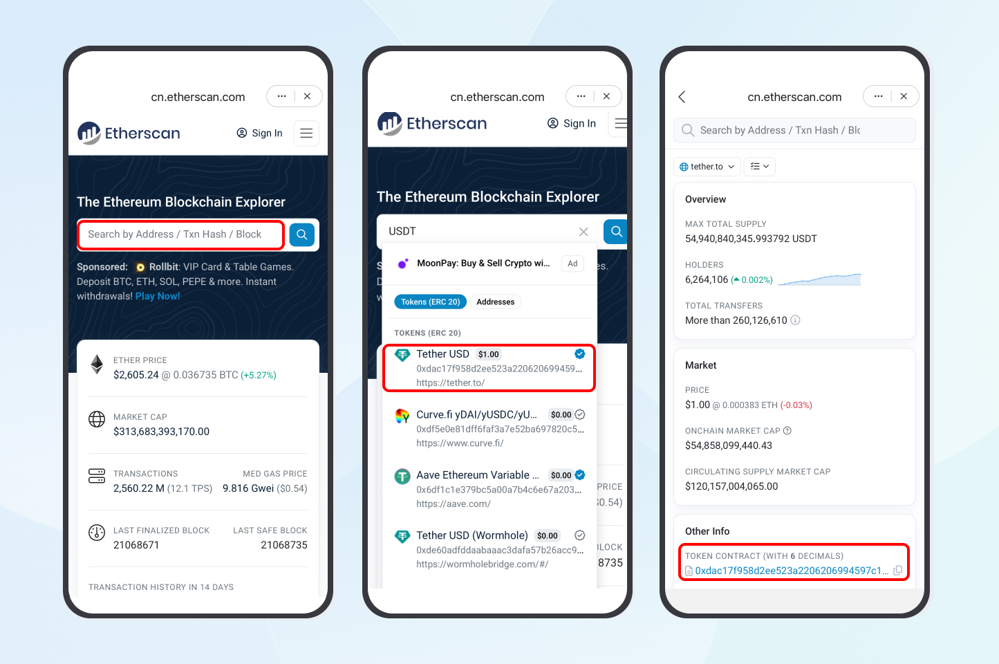

When you transfer supported tokens to your imToken wallet or import an existing wallet, imToken automatically detects and displays common tokens associated with your account, simplifying token management.
Currently, imToken supports token management for Ethereum, Layer 2 and EVM chains, Tron, TON, Cosmos, Osmosis, and Vaulta accounts. (Note: Other accounts do not support this feature yet. Click here for the list of supported chains and tokens.)
Token Management
Adding Tokens
If some tokens aren't automatically displayed on the homepage, you can add them manually. imToken allows you to add tokens by discovering popular assets, contract addresses, or custom tokens.
On the account homepage, click the "+" button to access the token management page, then use one of the following methods to add tokens:
Method 1: Click "All My Assets" and tap "+" next to the token you want to add to the homepage. (Note: When new tokens are transferred in, the "+" will be marked with a red or blue dot as a notification.)

Method 2: Find the token you want to add in the "Popular Assets" list and tap "+" next to the token to add it to the account homepage.

Method 3: Enter the token name/contract address in the search bar at the top to search and add it.

Tips for searching tokens:
- If you can't find the token, try searching by its contract address.
- If there are multiple tokens with the same name, select the correct token based on the contract address.
Method 4: Select "Custom Token," enter the token contract address, and click "Save" in the top right to add it to the account homepage.
Note: When entering the token contract address, the Symbol and Decimal parameters will be automatically retrieved. Currently, Tron, TON, Cosmos, and Osmosis accounts do not support custom tokens.

Adjusting Display Order and Hiding Tokens
You can customize the token display order on the account homepage or hide unnecessary tokens by following these steps:
- Click "+" and select "Displayed Assets."
- Long press the three horizontal lines next to a token to drag it up or down for reordering, or click "Default" to sort by default order, value, or name.
- Click the "-" next to a token and select "Delete" to remove it from the homepage and hide less commonly used tokens.

How to Find Token Contract Addresses
If you don't have the contract address for the token you want to add, you can find it using a blockchain explorer, such as Etherscan.
1. Open imToken, navigate to the "Browser" tab, and search for or visit https://etherscan.io to enter "Etherscan."
Note: To find an explorer for a different network, simply enter the network name or explorer domain in the search bar, such as "Arbitrum" or https://arbiscan.io for the Arbitrum explorer.

2. Enter the token name (e.g., USDT) in the search bar, select the desired token from the results, and click to access the token details page. The token contract address is displayed under the "TOKEN CONTRACT" field in the "Other Info" section.
